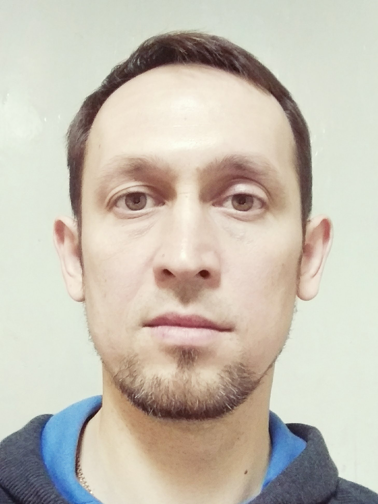

Ильяс Ахмеров
Дата рождения: 22.02.1982 г. (38 лет)
Должность: тестировщик
Контакты:
Знания языков:
Немецкий: базовый уровень
Английский: начальный уровень
Профессиональные навыки:
Уверенный пользователь ПК, знание терминологии в тестировании и основных жизненных циклов ПО, анализ требований и тестирование документации, оформление багов в баг-трекинговой системе Jira, основы программирования на языке Python.
Работа с инструментами автоматизированного тестирования:
- Selenium WebDriver
- Postman
- Apache JMeter
Среды разработки:
- WebStorm
- PyCharm
Личные качества:
Трудолюбие, внимательность к мелочам, усидчивость, целеустремленность, умение работать в команде, нацеленность на результат.
Образование:
| Высшее: | МГУ им.Н.П.Огарёва |
| Факультет: | РИМ |
| Специальность: | Экономика и управление на предприятии машиностроения |
| Год окончания: | 1999 |
Курсы:
| Название: | Тестирование программного обеспечения |
| Организация: | Codemasters International |
| Год окончания: | 2020 |
Опыт работы:
| Дата | Компания | Должность | Обязанности |
|---|---|---|---|
| 14.05.2020 г. – по наст. время | ООО "Агентство интернет маркетинга "Трувизибилити"" | Тестировщик | Тестирование и повышение качества продукта, локализация и документирование найденных дефектов, контроль их исправления. Ведение тестовой документации. |
| 01.06.2017 г. – 30.09.2019 г. | ФГБУ «ЦЖКУ» | Мастер КЖФ | Содержание и текущий ремонт казарменно-жилищного фонда МО РФ, санитарное содержание прилегающей территории. Руководство техническим персоналом, составление документации. |
| 24.04.2016 г. – 31.05.2017 г. | ООО «Компонент» | Мастер КЖФ | Содержание и текущий ремонт казарменно-жилищного фонда МО РФ, санитарное содержание прилегающей территории. Руководство техническим персоналом, составление документации. |
| 16.02.2011 г. – 30.10.2015 г. | ОАО «Славянка» | Заместитель начальника РЭУ | Содержание и текущий ремонт казарменно-жилищного фонда МО РФ, санитарное содержание прилегающей территории. Руководство техническим персоналом, составление документации. |
| 09.09.2010 г. – 16.02.2011 г. | ОАО «Славянка» | Начальник ЖЭУ | Содержание и текущий ремонт многоквартирных домов, проведение плановых и внеочередных осмотров, составление технической документации |
| 11.01.2010 г. – 08.09.2010 г. | ФГКУ «1340 ЦОМТИ» | Экономист | Учет товарно-материальных ценностей |
| 02.08.2006 г. – 31.12.2009 г | Санаторно-курортный комплекс «Надежда» | Главный бухгалтер | Ведение бухгалтерского и налогового учета, подготовка и сдача отчетности, уплата налоговых платежей |